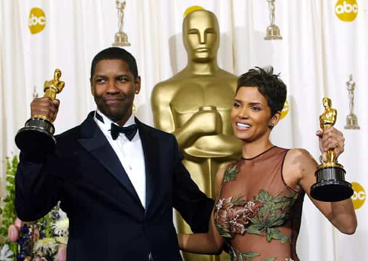
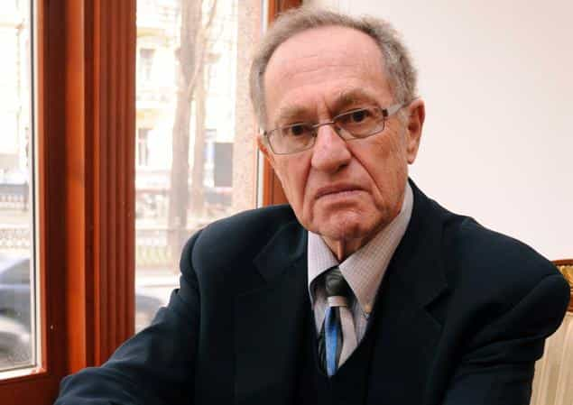
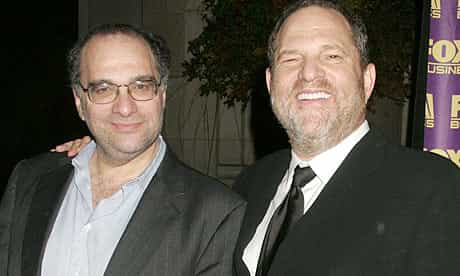

< < < Back
Will Smith’s Revolt Against The Oscars Shows That Leftist Celebrity Solidarity Is Crumbling – Return Of Kings
Will Smith, ever the docile husband, has joined his wife Jada Pinkett-Smith in declaring that he will boycott the Oscars. The reason? The awards must be racist because no blacks were included as nominees in the four acting categories.
Although the absence of incendiary black director Spike Lee would have been unsurprising, Smith’s refusal to attend marks an unprecedented development for a community which, as liberal as it is, usually only fully pursues its agenda outside the movie industry. Is the long-reinforced narrative finally crumbling?
For example, my recent article about Hollywood’s penchant for champagne socialism demonstrated how actresses spend more money preparing for the Golden Globes than the average American household earns in a year. Hollywood itself is usually spared from having to act on the radical rhetoric of its otherwise firmly Democratic-supporting stars.
Up until now, Hollywood solidarity, based upon very strictly enforced political standards, has been a given. Even consistent fruit loops like Tom Cruise and John Travolta were warmly kept in the embrace of the Tinseltown elite because their Scientology membership did not challenge fundamental leftist presuppositions.
By contrast, conservative individuals like Mel Gibson have been semi-blacklisted and personal responsibility-preaching African-American comedian Bill Cosby has been expelled for good. Smith’s unrestrained attack on the celebrity fold shows that serious cracks have emerged in the long-standing cordon sanitaire protecting virtually all Democrats and like-minded celebrities.
Let’s now explore them.
Is the absence of black nominees really such a bad thing?

It is almost certain that the combination of a Russell Crowe BAFTAs tantrum and the Academy’s desire to show its love of diversity ensured Denzel Washington won his Oscar in 2002. There were questions about fellow winner Halle Berry’s worthiness, too.
The four categories reserved for acting Academy Awards mean there can be only 20 nominees across the board. Oscars nights are understandably Anglocentric, just as film festivals and awards ceremonies located in Asia and elsewhere recognize more local and regional films and their performers. And the proportion of blacks across the major English-speaking countries is less than 10%, making Smith’s boycott even more bizarre and unwarranted.
Blacks in the United States comprise 13% of the population and the figure is much lower in Canada. Australian and British actors, who have long punched above their weight at the Academy Awards, come from countries with minuscule black populations, especially the former place. We should also remember that blacks, more likely to be in prison, on parole or within other unsavory categories, are less likely to either attend drama school or enter the acting world to begin with.
What Smith, Pinkett-Smith and Lee’s boycott comes down to is an insistence that an awards ceremony rigidly represent wider demographics, as if that would be a fair answer to a competitive process ostensibly based on evaluations of merit. At best, if the Oscars were “representative,” the trio could only expect 1 or 2 black actors to be nominated. Because of the tiny sample of just 20 nominated actors, zero black actors does not indicate any entrenched racism.
Plus, Smith, who was not nominated, can easily be accused of having sour, self-interested grapes for not being voted for. But, no, he’s only wanting so-called racial justice, right?
Many of you will recall the wins of Denzel Washington and Halle Berry at the 74th Academy Awards held in 2002, when the ceremony was widely lauded as the “black Oscars.” Particularly in the case of the snubbed Russell Crowe, who lost out to Washington, pundits observed that the Academy wanted to recognize black actors as an “atonement” for the decades before. I did not hear any outrage from the celebrity elite then.
What the Will Smith boycott and American colleges have in common

Hollywood is suffering from the same sort of friendly fire over the Oscars controversy as liberal Harvard Law School professor Alan Dershowitz received from SJW students over his calls for due process in college rape tribunals.
Just as current American college students, the most radical of all time, are turning against and cannibalizing their comparatively “moderate” ideological parents and grandparents, like liberal Harvard professor Alan Dershowitz, the leftist agenda of Hollywood is being turned against Hollywood itself. Oftentimes this has been implicit, with loathsome figures such as Lena Dunham spruiking their extremist wares without directly challenging the industry that enriches them.
With Smith’s boycott, things have become much more explicit. For years and years, the Hollywood narrative, both in films and on the red carpet, has been “America is racist, racist, it’s nothing but racist!” Movies like Crash have tried to present racism as a multifaceted problem not just experienced by blacks, but still had the effect of treating African-Americans as the only victims, no matter how tenuous the allegations of discrimination.
The claims of racism are preposterous, however. In addition to Denzel Washington in 2002, Jamie Foxx and Forrest Whitaker have won Best Actor awards at the Oscars since 2000, meaning that leading black male actors are overrepresented over the past years relative to actual black populations.
Moreover, four of the last nine Best Supporting Actress winners have been black (Jennifer Hudson, Mo’Nique, Octavia Spencer and Lupita Nyong’o). For brevity’s sake, I have not included all the non-winning black nominees.
What this all points to is Hollywood having essentially called for the rebukes it is now receiving, no matter how misguided those rebukes are.
Will “fat cats” like Harvey and Bob Weinstein be next?

Harvey and Bob Weinstein have revolutionized the idea of making money in Hollywood. Yet they’ve also been spared the kind of vitriol directed at the voting for the Academy Awards acting nominations.
If incessant digs by the Hollywood establishment at a somehow racist American society have produced the Oscars boycott, will very rich movie figures be next? For instance, Harvey and Bill Weinstein, formerly of Miramax and currently with The Weinstein Company, are arguably the most successful film businessmen of the last twenty years when both financial returns and critical reception are taken into account. Though exceptional tycoons, they are yet to be taken to task by their liberal acting stars for accumulating hundreds of millions of dollars. Perhaps because they themselves are also Democrats.
After all, look at the number of moderately and poorly paid people in the film industry. Set catering staff, personal assistants, make-up artists and equipment operators are either part of the working poor or struggle to pay their mortgages on lower middle-class remunerations. This is exactly the sort of situation where Hollywood liberals should be diverting their attention. Here is a reality they could actually influence, unlike some faraway conflict in Darfur or Syria.
And then there’s the number of white actors appearing in Weinstein-associated films. So far, critics like Smith have not resorted to attacking individuals perceived to be perpetuating the supposed whitewashing going on in Hollywood.
It will be interesting to see whether phenomenally wealthy producers and movie studio heads face the same music as awards ceremonies. The likelihood of an Oscars-style revolt is smaller, especially since the current actions of Will Smith, Jada Pinkett-Smith and Spike Lee pose no real risk to their bank accounts or future careers. The question of a wider impact is a relevant one, nevertheless.
In the meantime, we can all feel mirth in seeing leftist Hollywood actors cutting hard into the liberal community that employs them.
Read More: It’s A Hundred Times Easier To Come Out As Gay Or Transsexual Than As A Conservative In Hollywood